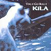

Celtic Lyrics Corner > Artists & Groups > Kíla > Tóg É Go Bog É > Tóg É Go Bog É
|  | Tóg É Go Bog É |
| Credits : | Rónán Ó Snodaigh |
| Appears On : | Tóg É Go Bog É ; Gaelic Voices (compilation) |
| Language : | Gaeilge (Irish Gaelic) |
| Lyrics : | English Translation : |
| Gafaithe in áit a líonann an trácht atá mé | I was trapped in a place that is ruled by the traffic |
| Gafaithe in áit a chreidfeadh tú é | I was trapped in a place where you would believe in it |
| Gafaithe in áit a rialaíonn an trácht a bhí mé | I was trapped in a place that is filled with the traffic |
| N'fheadar conas ach is cinnte go n-éalóidh mé | Don't know how, but I was always going to escape |
| Chun imeacht i dtreo na bóithre gan cosán le mo thaobh atá mé | I am going to go to where the roads have no pavements |
| Chun taisteal thair as thall aris ar bhrollach an domhan atá mé | I am traveling back and forth on the breast of the world |
| Chun díriú i dtreo an dúchais in ar tógadh mé atá mé | I am arriving to the heritage within which I was reared |
| N'fheadar conas ach is cinnte go shroichfidh mé é | Don't know how, but for sure, I'll get there |
| Slán agaibh, slán agaibh Uilig, slán agaibh | So good-bye, good-bye, good-bye |
| Agus buailfidh libh arís ar ball | I'll see you soon |
| Slán agaibh, slán agaibh a chairde, slán agaibh | So good-bye, good-bye, good-bye |
| Agus tiocfaidh mé ar ais arís ar ball | I'll see you soon |
| Ag fuascailliú na sciatháin atá díomhaoin i mo cheann atá mé | I am liberating the wings that are idle in my mind |
| Ag lorg radharc lena ritheann an tuiscint léi atá mé | I am looking for the sight that carries the light |
| Ag lorg sos agus síochán do mo chroí 's mo cheann atá mé | I am looking for rest and peace for my head and heart |
| Is cuma conas ach, go bhfaighfigh mé é | It matters not how but that I get there |
| Tóg é go bog é, glac é go réidh | Take it easy, steady on there now |
| Tóg é go bog é, na bí ag troid leat féin | Take it easy, don't fight yourself |
| Tóg é go bog é, glac é go réidh | Take it easy, steady on there now |
| Tóg é go bog é, tochaill go doimhin ionat féin | Take it easy, dig deep within |
| Tóg é go bog é, glac é go réidh | Take it easy, steady on there now |
| Tóg é go bog é, na bí ag troid leat féin | Take it easy, don't fight yourself |
| Tóg é go bog é, glac é go réidh | Take it easy, steady on there now |
| Tóg é go bog é, tiocfaidh sé nuair a thagann sé | Take it easy, it'll come when it comes |
| Ag lorg áit lena mbuaileann an fharraige leis an spéar atá mé | I am looking for a place where the sea meets the sky |
| Ag lorg tobar a tinte óna lastar ár saol atá mé | I am looking for the well of fire from which our lives are lit |
| Ag iarraidh fás agus forbairt a chothú ar an saol atá mé | I want to nurture growth of expansion in this life |
| Agus cúiseanna ceiliúradh a chur chun cinn timpeall orm atá mé | And encourage reasons for celebration around me |
| Tóg é go bog é, glac é go réidh | Take it easy, steady on there now |
| Tóg é go bog é, na bí ag troid leat féin | Take it easy, don't fight yourself |
| Tóg é go bog é, glac é go réidh | Take it easy, steady on there now |
| Tóg é bog é, tochaill go doimhin ionat féin | Take it easy, dig deep within |
| Tóg é go bog é, glac é go réidh | Take it easy, steady on there now |
| Tóg é go bog é, tiocfaidh sé nuair a thagann sé | Take it easy, it'll come when it comes |
| Tóg é go bog é, glac é go réidh | Take it easy, steady on there now |
| Tóg é go bog é, lig don solas teacht isteach i do shaol | Take it easy, let the light into your life |
| Tóg é go bog é, glac é go réidh... | Take it easy, steady on there now... |